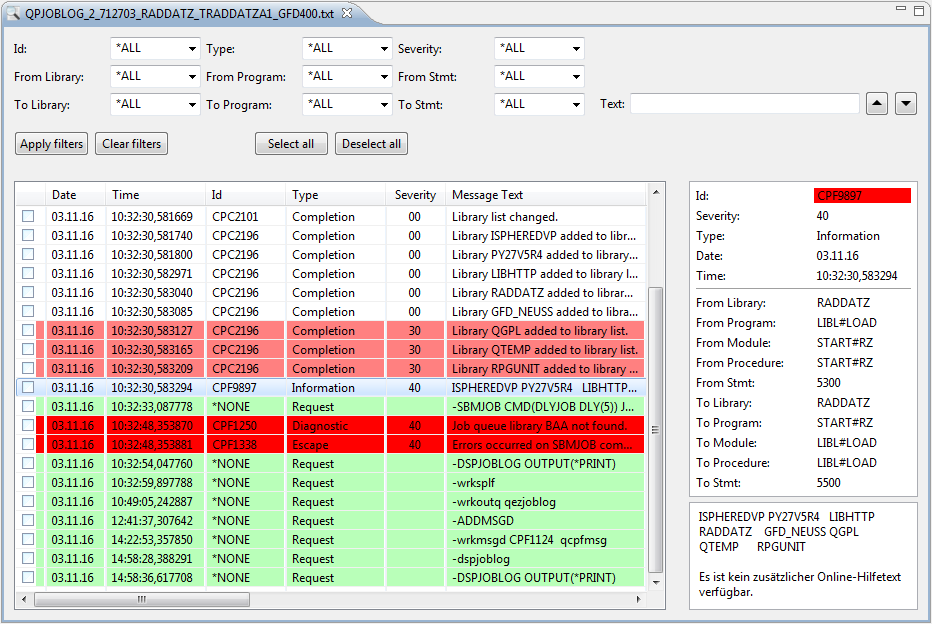
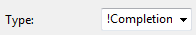
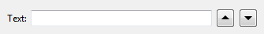
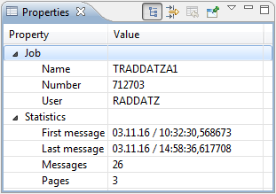
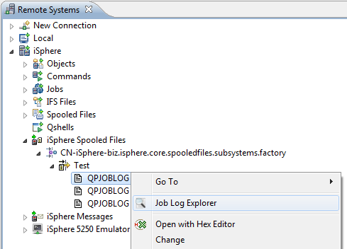
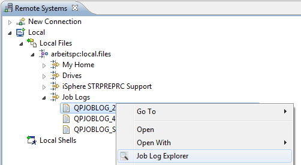
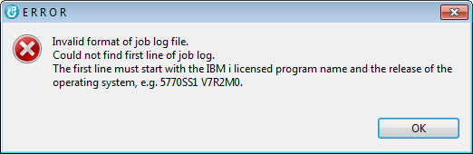
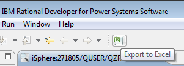

The Job Log Explorer is used for analyzing job logs. It lets you view and filter the job log messages
quick and easily. You can open it from the context menus of:
The Job Log Explorer is used for analyzing job logs. It lets you view and filter the job log messages
quick and easily. You can open it from the context menus of:
Messages can be colored depending on their severity to get your attention and there is a special Job Log Explorer perspective available.

Use the drop down combo boxes and the text field at the top of the editor to adjust your filters. Then press the [Apply filters] button to apply the filters to the job log. Each search argument can be negated with a preceding exclamation mark (!):

You may also select specific message, which are displayed regardless of the filter settings. Click the checkbox icon next to a job log message to select or deselect a message.
The text field can also be used for searching the messages for a given text. Today, the search does not include the second level text.

The Eclipse Properties view displays the properties of the job log:

Go to the Jobs subsystem and start the Job log Explorer from the context menu of a remote job:

Go to the iSphere Spooled Files subsystem and start the Job log Explorer from the context menu of a QPJOBLOG spooled file:

Go to the Local subsystem and start the Job log Explorer from the context menu of a given local file:

The file name must not necessarily start with QPJOBLOG. If the job log parser cannot not recognize the format, an error message is displayed:

The messages that are currently displayed in the table view can be exported to Excel. Click the Export to Excel icon of the toolbar to open the export dialog:
